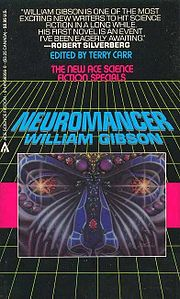

|

|
Descrição
O livro é um marco na literatura moderna, inaugurando a cibercultura,
inspirando a trilogia Matrix. Esta edição especial possui prefácio inédito do autor,
posfácio acadêmico de Adriana Amaral e nova tradução, feita por Fábio Fernandes
(o mesmo tradutor de Reconhecimento de Padrões, também de Gibson, e Laranja Mecânica
, de Anthony Burgess).
Autor: William Gibson
Editora: Aleph
Edição: 6ª Edição
Número de Páginas: 365 páginas
Ano: 2010
|